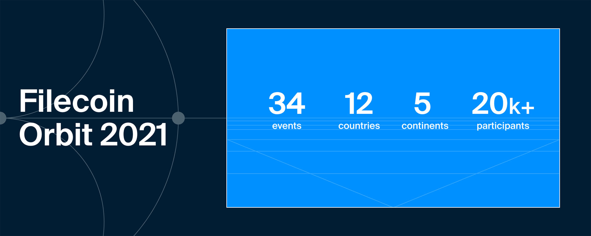

Filecoin Orbit 2021 Recap: Celebrating the One Year Anniversary of Mainnet Liftoff
Filecoin Orbit 2021 celebrated the first anniversary of the Filecoin mainnet launch on October 18-22nd, 2021. For one week, the global Filecoin community gathered at conferences, workshops, and meetups — both virtual and IRL — held across the globe, from Italy to China, Nigeria to Japan, and more.
Juan Benet kicked off Filecoin Orbit with a keynote highlighting the many achievements of the Filecoin community over the past year since Liftoff, including the phenomenal growth in network storage power: “Twelve exbibytes is just a huge amount of storage capacity and this is provided by over three thousand storage providers around the world.”

The week was packed with enlightening and informative events, check out the recap below and head over to the Filecoin Orbit YouTube playlist for a full list of talks.
Announcements
üíª Filecoin Virtual Machine
Announcing the Filecoin Virtual Machine (FVM)!
“The goal of the Filecoin Virtual Machine is to enable users to deploy their own smart contracts on the Filecoin blockchain,” Raúl Kripalani of Protocol Labs revealed. “There are so many things that can be built on the FVM that we are so excited about. What we really want is to get you thinking about the possibilities here.”
FVM brings general programmability and compatibility with Ethereum Virtual Machine smart contacts to the Filecoin blockchain. Attendees of Filecoin Orbit were among the first in the world to learn about FVM, its vision, the thousands of opportunities that it will unlock, its implementation roadmap, and how to join the action.
üìö Internet Archive
The Internet Archive was one of the first organizations to grasp the potential of Filecoin and IPFS to store humanity’s most valuable information in a secure and robust manner, and a collaboration with the Filecoin Foundation to serve that important mission was announced in April 2020.
At Filecoin Orbit,Brewster Kahle, founder of the Internet Archive,noted the importance of archiving knowledge for generations to come: “We want to make the internet permanent because when the World Wide Web was created, it did not have a structure made for longevity, which is something that Filecoin and the Internet Archive is aiming to solve.”
✅ The Truth Machine
By integrating Chainlink into the Filecoin ecosystem, a multitude of bidirectional smart contract capabilities emerge that were previously impossible to achieve, such as decentralized oracle networks.
At a fireside chat, Chainlink Co-founder, Sergey Nazarov discussed those and other new capabilities with Juan Benet, and how cryptographically-verified systems will help solve large-scale global problems.
üí∞ Zcash
Last month, Protocol Labs, Electric Coin Company (ECC) and the Ethereum Foundation announced a partnership for R&D into Halo 2, ECC’s recursion system for Zcash. Many know Zcash as a privacy-enhancing cryptocurrency, while Halo 2 is also a marvel of blockchain scalability. In a Filecoin Orbit keynote panel, Zcash creator and ECC CEO Zooko Wilcox and Filecoin Foundation chair Marta Belcher talked about extending the Halo zero knowledge proof system and how that new technology can be used.
Zooko also spoke about what web3 meant in terms of privacy: “A lot of people think of privacy as ‘secrecy,’ but to me, it means consent. You should choose who in your life you share information with. Web3 should enable those to share on their own terms.”
üñº NFTs
OpenSea was one of the first NFT marketplaces to integrate Filecoin and allow creators to freeze metadata, making NFTs more verifiable and persistent in the long-term.
OpenSea Co-founder and CEO Devin Finzer gave an in-depth talk and mentioned the benefits of storing NFT metadata with Filecoin: “You know we started to work more closely with IPFS and Filecoin and we really wanted to create an experience for people creating NFTs that would allow them to have permanent storage of their metadata.”
üë¢ Request for Startups
At the start of Filecoin Orbit week, Protocol Labs issued a far-reaching request for “crypto-native” startups, inviting new and current companies to seek support from the Protocol Labs network and join the crypto-native revolution, envisioning a world in which teams building in this space can lean on provided services, leaving them free to focus on the core technical issues they set out to solve.
üèõ Filecoin Foundation
In addition to taking part in the sessions on Filecoin Green and Zcash, the rapidly growing Filecoin Foundation participated in and hosted several other events over the course of Filecoin Orbit. They kicked off with a town hall-style event dedicated to the idea of governance in Web3 and how it relates to the Filecoin ecosystem.
ü•¨ Filecoin Green
How can Filecoin storage providers lead the way in building a verifiably environmentally sustainable blockchain? Key stakeholders within the Filecoin ecosystem including Juan Benet, Filecoin Green project lead Alan Ransil, PhD, Radboud University Associate Professor of Computer Science Harald Vranken, and many others explored this question, and revealed a path for environmental sustainability in Filecoin.
Juan stated, “Don’t settle for zero ‚Äî Filecoin can and should aim to be 10x green with net carbon emissions of -1,000.”
We are planning events, grants and other support to enable Filecoin to become verifiably environmentally beneficial and to track environmental impacts throughout the web. Join #fil-green on Filecoin Slack to be the first to find out about new opportunities or tell us what you think needs to be built in this space on Github.
üåå Filecoin Project Gravity
Announced a few weeks earlier, Filecoin Orbit presented an opportunity for many more people to learn from Protocol Labs’ Marina Kostioutchenko about Filecoin Project Gravity, a limited-time community referral program in which storage providers who succeed in bringing customers with large datasets onto the Filecoin network can receive FIL awards and helps create a “data gravity pull” effect.
There’s still time toregister in the Filecoin Project Gravity sales referral program by December 1, 2021.
üöÄ HyperDrive
Just before Filecoin Orbit, Filecoin mainnet executed its major HyperDrive network upgrade. “HyperDrive unlocks a 10 to 25x increase in network throughput through innovation in underlying technology,” noted ZX of Protocol Labs in a Filecoin Orbit session.
Storage clients and application developers have benefited from increased message throughput, improving overall network utility. But the most notable improvement has been for Filecoin storage providers, who are now benefiting from new economies of scale and faster capacity onboarding rates. These are just some of the advantages HyperDrive has brought to the Filecoin ecosystem.
üïä Starling Lab
Starling Lab, jointly developed by the USC Shoah Foundation and Stanford University’s Department of Electrical Engineering, was announced last year as a new framework for combating misinformation, tracing provenance, and reducing information uncertainty across a variety of applications, from news media to historical preservation.
Jonathan Dotan, a fellow at Stanford’s Center for Blockchain Research and the Stanford Compression Forum, gave an update on Starling Lab‚Äôs progress and its role in the advancement of human rights.
Dotan also called for more diversity and inclusion in open source: “We need to make sure that, as we look at the statistics around open source technology development ecosystems, we take proactive measures to ensure that we can actually have proper inclusion.”
üß± Hackathons
In the past year, there have been more than 30 Filecoin and IPFS hackathons and dozens of amazing projects and applications have been developed. Lukas Bresser of Protocol Labs delivered highlights from the hackathons this last year and announced the recent launch of the Filecoin Hackathons website, where information about all ongoing hackathons can be found and future hackathons will be announced!
üï∏ Web3 Browsers
Over the last year, the integration of browsers with Web3 technology has experienced new milestones, including Filecoin‚Äôs and IPFS‚Äô collaborations with Brave, Opera and several others. ‚ÄúWhat does it mean now with the advent of NFTS ‚Äî what are the types of functionality that we can have in a browser that has both your cryptographic identity through its wallet and also you’re constantly browsing the cryptographic assets that you are either interacting with communities with or purchased even?‚Äù Dietrich Ayala of Protocol Labs and Anirudha Bose of Brave discussed this question and more about the work they and others are efforting to make sure Web3 will have native decentralized storage capabilities in Web3 browsers.
Filecoin Orbit Global Community Events
üá®üá≥ Protoschool & KEN Labs Tech Open Day and Hot Pot Night
Filecoin enthusiasts gathered virtually and in person in Chengdu, China for talks, including sessions on the retrieval market, an IPFS developer tutorial (in Chinese), and more, all followed by a rousing hot pot dinner to keep the conversation bubbling!
üá≥üᨠFilecoin Orbit 2021, Lagos NG
In Lagos Nigeria, Chukwuemeka Enoch M. hosted a Filecoin Mainnet Anniversary celebration bringing together the West African Filecoin community.
üá≥üᨠFilecoin Orbit Event 2021, Warri NG
In Warri Nigeria, the GDG Warri community collaborated with the Filecoin community to host a Filecoin Mainnet Anniversary on Saturday October 23, 2021. It was an onsite event with a record attendance of thirty people featuring an introduction to IPFS and Filecoin by the host Charles Freeborn.
Oyedeji of Canza Finance, also gave a live virtual talk on the state of the IPFS in the African market. Colin Evran of Protocol Labs gave the opening keynote at the event.
üá®üá≥ Enter the metaverse - Anniversary of Filecoin Mainnet Launch
FilSwan, a marketplace for Filecoin storage providers, celebrated the first year of Filecoin mainnet with a two-day event consisting of presentations and panelists on the first day, and a workshop on the second day.
The event was presented by storage providers and ecosystem builders, as well as active community members such as Nebula AI, FBG Capital, Tuninsight AI, Jimmy Lee from Application Research Group, Protocol Labs’ Jonathan Victor, Fei Yan, and PiKNiK CTO Stuart Berman. Stefaan Varvaet from Protocol Labs also delivered an opening speech.
üá®üá≥ Matrix Storage x Athena Pool 1st year Anniversary(„Äå Áü©ÈòµÂ≠òÂÇ® X ÈõÖÂÖ∏®ú‰∫ëʱ† „Äç- Â≠òÂÇ®‰∏∫Êú¨ÔºåÂõûÂΩíÂàùÂøÉÔºåÂÜçÁ≠ëËæâÁÖå Êö®Â∫ÜÁ•ù‰∏ªÁΩë‰∏äÁ∫ø1‚É£Ô∏èÂë®Âπ¥Ê¥ªÂä®)
Matrix Storage held their Filecoin Orbit Meetup in Chengdu, China. They hosted an offline gathering and more than 50 interested participants attended, some from traditional industries, with very high interest in distributed storage solutions and the overall feedback was extremely positive.
üáØüáµ Filecoin 1st Anniversary
The Filecoin community in Japan is growing fast, and IPFS Japan, a consortium that aims to improve the country’s industrial competitiveness through technologies centered on IPFS and Filecoin, hosted an online webinar to mark Filecoin Orbit. They invited companies that are storage providers in Japan as well as companies engaged in NFT businesses utilizing IPFS to take part.
üåê Building Filecoin Yield Curve
In this session hosted by Secured Finance with storage providers, ecosystem partners, and financial experts, there was a community AMA, panel discussion, and insights offered on the potential of Filecoin finance.
üåç Filecoin Orbit Community Event: East and Southeast Europe
In the first event of its kind in this region, over 300 community members tuned in for two days to celebrate Filecoin Orbit.
There was a live demo of Estuary by Jimmy Lee, and a panel to discuss the opportunities that exist for European developers in the decentralized storage ecosystem. Check out Day 1 and Day 2!
üá®üá≥ The First Anniversary of Filecoin! Greater China Community Celebration
Artmix, the Greater China community, and CO hosted a global celebration of Filecoin Orbit from Xi’an, China and publicity activities were successfully held.
üá≥üᨠIntroduction to Filecoin at Web3 Metaverse
A virtual meetup was held consisting of formal and informal talks to teach as many developers as possible these technologies and how they can build on them.
üáµüáπ Filecoin Orbit Lisbon Meetup
A special event was hosted in Lisbon, at Heden Santa Apolonia, to celebrate all of the achievements of the Filecoin network in the first year that mainnet was active, and looked ahead to what’s coming next.
üá®üá≥ Filecoin Mainnet Anniversary Community Celebration
Shanghai-based IPFSForce invited friends from the Filecoin ecosystem to join in a virtual gathering of the 200th Force Open Day to celebrate the first anniversary of Filecoin mainnet launch and all the achievements of the Filecoin network in year 1. Over 11,000 viewers joined online to watch presentations by Juan Benet and Colin Evran, Ecosystem Lead at Protocol Labs, as well as a demonstration of Estuary by Jimmy Lee.
üáÆüáπ Happy Birthday Filecoin
Filecoin enthusiasts in Florence, Italy, including Futurix Lab and Marvel Generation celebrated one year of Filecoin mainnet and discussed what’s next for Filecoin in Europe and beyond.
üá∫üá∏ Filecoin Mainnet Anniversary Community Celebration in San Diego
PiKNiK hosted a celebration for the broader San Diego web3 and crypto community where Filecoin enthusiasts mingled while enjoying delicious food and drinks.
üá≠üá∞ Hong Kong Decentralized
An informal cocktail networking event for blockchain friends, colleagues, peers, and projects was hosted in Hong Kong by the Forkast media organization to talk about future opportunities in the web3 space, particularly regarding decentralized content.
üá≥üá± Filecoin Amsterdam Meetup 2021
Dutch storage provider Dcent organized a community-driven meetup in celebration of the one-year anniversary of the Filecoin mainnet launch, including a round table discussion on improving European Filecoin collaborations, followed by a dinner. From storage providers, notaries, clients to dapp developers, the event was free and accessible for all with an affinity for Filecoin or IPFS.
üá©üá™ October IPFS + Filecoin Orbit Meetup
The Munich IPFS group in Germany organized a meetup with researchers and developers working on projects involving IPFS/IPLD and libp2p and to celebrate the anniversary since the Filecoin mainnet launch, where those technologies play such a crucial role.
üá∞üá™ Web3 Metaverse Traverse Filecoin Orbit
In Nairobi, Kenya, an event was held by Web3 Metaverse, along with guests from Celo and Binance, for a fireside chat on interoperability of IPFS and Filecoin networks.
üá≥üᨠFilecoin Orbit Event 2021 Warri
A celebration of the one-year anniversary of the Filecoin mainnet launch was held at Skysense Hub, Effurun-Sapele Road, by Stanbic IBTC bank, Effurun-Warri, Nigeria. Charles Freeborn was a speaker.
And Many More!
Filecoin Orbit 2021 was a series of highly informative events and activities too numerous to go into full details here, including sessions on Filecoin deal-making, an overview of grants, large data storage, the League of Entropy’s drand, IPLD in WASM, VDFs and MetaProof, SnapDeals, SNARKs, and still many more.
These and all of the remaining recordings from the main Filecoin Orbit days can be seen on the YouTube playlist, and many global #FilecoinOrbit moments can be looked back upon in Twitter.
Everyone involved in Filecoin Orbit 2021 as either event organizers or participants deserve a huge round of applause for their contributions!
What’s Next
Next for Filecoin is another year in orbit. What that year will hold no one can exactly know, but a few things are certain. The community will continue to grow under the promise of storage for humanity‚Äôs most important information. Grants will continue to support the developers and startups that choose to build on the Filecoin and IPFS stacks. New projects will emerge and veteran ones will refine, creating a vibrant and robust ecosystem of clients, storage providers, and everyday app users who progressively march towards a vision of global, decentralized, secure, and resilient storage for all. Join the community on this next journey around the sun, and the many more to follow. üöÄ